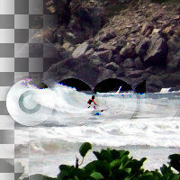

Soft-light
SVG blend operation soft-light (<code>if 2 * cA < aA: d = cB * (aA - (aB == 0 ? 1 : 1 - cB / aB) * (2 * cA - aA)) + cA * (1 - aB) + cB * (1 - aA); if 8 * cB <= aB: d = cB * (aA - (aB == 0 ? 1 : 1 - cB / aB) * (2 * cA - aA) * (aB == 0 ? 3 : 3 - 8 * cB / aB)) + cA * (1 - aB) + cB * (1 - aA); otherwise: d = (aA * cB + (aB == 0 ? 0 : sqrt (cB / aB) * aB - cB) * (2 * cA - aA)) + cA * (1 - aB) + cB * (1 - aA)</code>)
sRGB
Use sRGB gamma instead of linear
name: srgb
type: boolean
default: False
pads: aux input output
parent-class: GeglOperationPointComposer
categories: compositors svgfilter
source: operations/generated/soft-light.c
 This page is part of the online GEGL Documentation, GEGL is a data flow based image processing library/framework, made to fuel GIMPs high-bit depth non-destructive editing future.
This page is part of the online GEGL Documentation, GEGL is a data flow based image processing library/framework, made to fuel GIMPs high-bit depth non-destructive editing future.